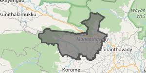

About Thavinhal Grama Panchayat
Introduction and administrative background

Thavinhal Grama Panchayat is a rural local self-government institution situated in Wayanad district, Kerala. It comes under Mananthavady Block Panchayat. The region forms part of the elevated and environmentally significant landscape of the Western Ghats.
The panchayat is characterised by a combination of hills, valleys, streams, settlements and cultivated land. Agriculture is an important component of the local economy, while the natural environment contributes to the area's ecological value.
This interactive map platform provides convenient access to the linked WebGIS application. It is intended to help users explore spatial information and understand the geographical setting of the panchayat.
Geographical Information
Location, relief, drainage and environmental characteristics
Location and Administration
Thavinhal Grama Panchayat is located in Wayanad district in northern Kerala. It is administered as part of Mananthavady Block Panchayat. Periya, Thavinhal and Valad are among the village areas associated with the panchayat.
Relief and Topography
The area forms part of Wayanad's elevated terrain and includes hills, slopes and valleys. Variations in relief influence settlement distribution, transport accessibility, land use and agricultural activities.
Drainage and Ecology
Streams and the wider Kabani river system form part of the regional drainage context. Vegetation, cultivated land and forested areas contribute to the environmental character of the region.

Interactive Map
Explore the WebGIS map of Thavinhal Grama Panchayat below.
Official Information
Visit the official panchayat portal for administrative information.
The official website provides access to information and services related to Thavinhal Grama Panchayat.
Official Website: https://thavinhalpanchayat.lsgkerala.gov.in/en